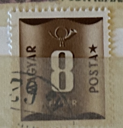
| SOURCE | TITLE| IMAGE MATCH | click to source page |
| Colnect | Stamp: Postage due (Hungary(Postage Due III. - Brown serie) Mi:HU P193,Sn:HU J200,Yt:HU T187,Sg:HU D1212,AFA:HU P201,Phi:HU P207,Un:HU S193 📮 | 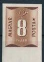 |
| 2dehands | ② Hongarije 1952 - Yvert 187TX - Takszegel - 8 fi. (PF) — Postzegels | Europa | Hongarije — 2dehands | 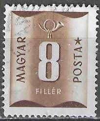 |
| Todocolección | ❤️ sello: franqueo insuficiente, 1951, hungría, - Buy Antique stamps of Hungary on todocoleccion | 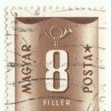 |
| Find Your Stamps Value | Value of magyar posta filler 30 stamps | 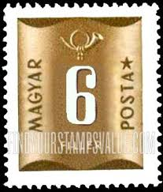 |
| eBay | HUNGARY 1951 8fi brown SGD1212 used NG POSTAGE DUE #A06 | eBay | 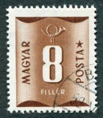 |
| Alamy | Postage stamp from Hungary in the Postage due series issued in 1951 Stock Photo - Alamy | 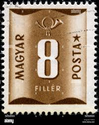 |
| eBay UK | Hungary - Postage Due Stamps 1951 - Used/CTO - SG D1210-D1213, D1215-D1220 | eBay UK | 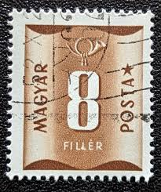 |
| sellosmundo.com | MAGYAR POSTA. Hungary Europe ref. 647 | 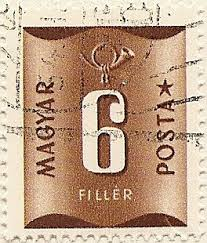 |
| Alamy | HUNGARY - CIRCA 1980: A stamp printed in HUNGARY shows image of the dedicated to the Magyar Posta, circa 1980 Stock Photo - Alamy | 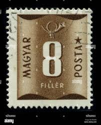 |
| UNC.UA | Марка. 8 filler. Венгрия купить на | Аукціон для колекціонерів UNC.UA UNC.UA | 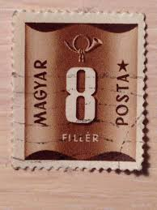 |
| Miraheze | Hungary – postage due issues - Stamp Encyclopedia |  |
| eBay | Numeral Cancellation Hungarian Stamps for sale | eBay | 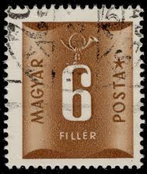 |
| Alamy | 6 hungarian filler hi-res stock photography and images - Alamy |  |
| iStock | Hungary Postage Stamp Stock Photo - Download Image Now - Black Background, Brown, Collection - iStock | 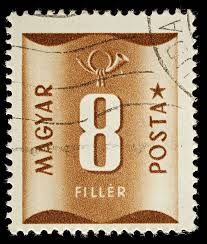 |
| sellosmundo.com | MAGYAR POSTA. Hungary Europe ref. 646 |  |
| Etsy | Hungary Postage Due Stamp Set 1922 to 1965 Coat of Arms Post Horn Anniversary - Etsy UK |  |
| Stamp Community Forum | Same Stamp - Different Value - Page 3 - Stamp Community Forum |  |
| Alamy | HUNGARY - CIRCA 1951: a stamp printed in the Hungary shows Maxim Gorky, Russian Writer, circa 1951 Stock Photo - Alamy | 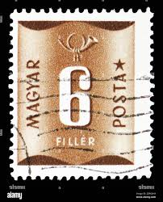 |
| HipStamp | Hungary 1951 Sc#J199, SG#1211 6f Brown Postage Due USED. | Europe - Hungary, Postage Due Stamp / HipStamp | 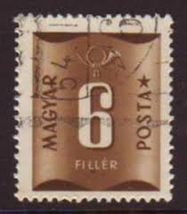 |
| Shutterstock | Hungary Circa 1951 Post Stamp Printed Stock Photo 2078032075 | Shutterstock | 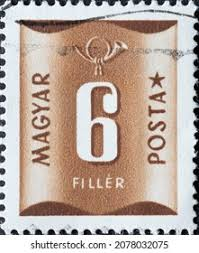 |
| wallapop.com | 3 Sellos de Hungría de segunda mano por 1,5 EUR en Madrid en WALLAPOP | 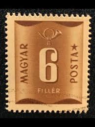 |
| Alamy | Postage stamp printed by Hungary, that shows Scarce Swallowtail (Iphiclides podalirius), circa 1966 Stock Photo - Alamy |  |
| ebid.net | Australia SG237d 1950 3d King George VI Used stamp on eBid United Kingdom | 220457115 | 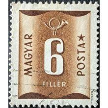 |
| Alamy | Invio hi-res stock photography and images - Alamy | 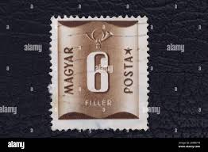 |
| eBay | HUNGARY 8 FILLER MAGYAR BROWN STAMP USED | eBay | 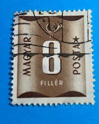 |
| eBay | Back of Book Hungarian Stamps for sale | eBay | 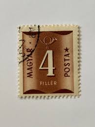 |
| Find Your Stamps Value | Value of magyar posta ezerp 100 red stamps | 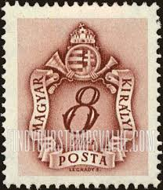 |
| Find Your Stamps Value | Value of magyar kiralyi posta stamps | 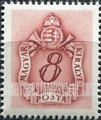 |
| 123RF | Magyar Stamp Stock Photos and Images - 123RF | 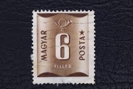 |
| Indian Hobby Club | STAMPS – Page 62 – Indian Hobby Club | 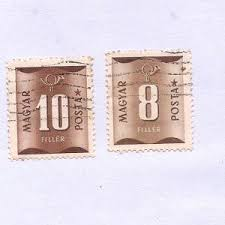 |
| HipStamp | Hungary #J205 40f Postage Due | Europe - Hungary, Postage Due Stamp / HipStamp |  |
| eBay | Magyar Foreign 40 Filler Brown Stamp Used - #A268 | eBay |  |
| Find Your Stamps Value | Value of magyar kir posta korona 2 rectangle brown stamps |  |
| Alamy | Postage stamp from Hungary in the Postage due series issued in 1951 Stock Photo - Alamy |  |
| Todocolección | sd)1961. hungary. flowers. roses. mnh. - Buy Antique stamps of Hungary on todocoleccion | 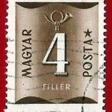 |
| Alamy | Postage stamp from Hungary in the Postage due series issued in 1951 Stock Photo - Alamy | 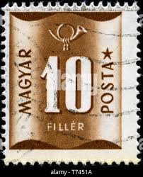 |
| sellosmundo.com | MAGYAR POSTA. Hungary Europe ref. 651 | 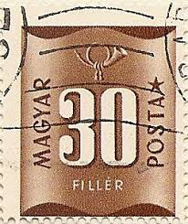 |
| Dreamstime.com | 5,179 Russia Hungary Stock Photos - Free & Royalty-Free Stock Photos from Dreamstime - Page 13 |  |
| sellosmundo.com | MAGYAR POSTA. Hungary Europe ref. 649 | 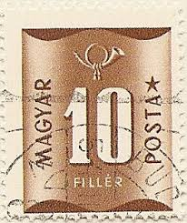 |
| Shutterstock | 3+ Thousand "magyar Posta" Royalty-Free Images, Stock Photos & Pictures | Shutterstock | 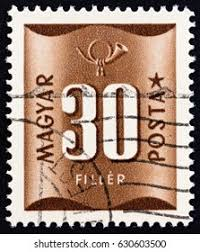 |
| The RainKey | Shop – Page 19 – The RainKey | 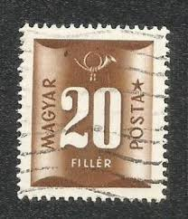 |
| Find Your Stamps Value | Value of postage stamps of japan 1974 mitsui & co.,ltd stamps | 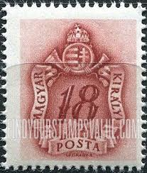 |
| HipStamp | Hungary #J201 10f Postage Due | Europe - Hungary, Postage Due Stamp / HipStamp | 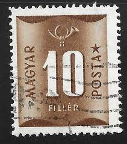 |
| Shutterstock | 3+ Thousand "magyar Posta" Royalty-Free Images, Stock Photos & Pictures | Shutterstock | 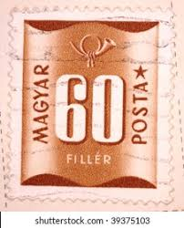 |
| LJUBOMIR KOKOŠAR | TURKISH LAND FORCES | 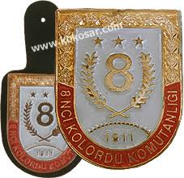 |
| sellosmundo.com | MAGYAR POSTA. Hungary Europe ref. 650 |  |
| ebid.net | Great Britain 1950 King George VI KG VI 2 1/2d Used Stamp. on eBid United Kingdom | 217585896 | 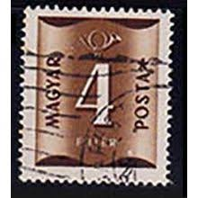 |
| eBay | Hungary - 1951 Figure of Value and Post Horn - Postage Due | eBay | 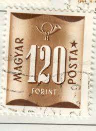 |
| iStock | Historic Philipine Flag On A Postage Stamp Stock Photo - Download Image Now - Flag, Horizontal, Letter K - iStock | 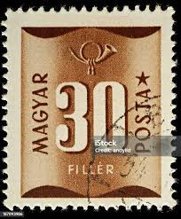 |
| Todocolección | magyar posta, hungria - v/f 60 filler - taxe, s - Comprar Selos antigos da Hungria no todocoleccion | 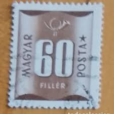 |
| stampsandstuff.net | Stamps from Hungary 1950-1959 | 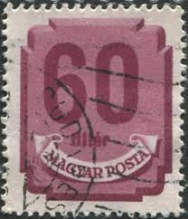 |
| Shutterstock | Karnal Haryana India -august 5th 2025-closeup Stock Photo 2670800629 | Shutterstock | 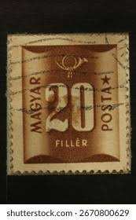 |
| Dreamstime.com | Postage stamp editorial photo. Image of letter, figures - 218648416 | 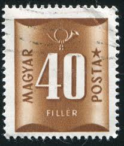 |
| HipStamp | Hungary Used Numeral 10 brown 1 (BP84522) | Europe - Hungary, Stamp / HipStamp | 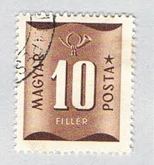 |
| eBay Australia | HUNGARY 1958 - 1965, 2 Sheets Porto Stamps 2ft, 4ft - 200 Stamps - Brown - USED | eBay Australia | 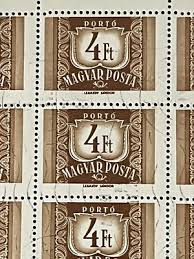 |
| Shutterstock | Postage Stamp Number: Over 3,405 Royalty-Free Licensable Stock Photos | Shutterstock |  |
| eBay | Hungary #Mi899 MNH 1946 Arms Hyper Inflation Patriarchal Cross [740 YT790] | eBay | 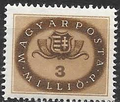 |
| Find Your Stamps Value | POSTAGE DUE STAMPS - Coat of Arms and Post Horn 16f brown red stamp price, value | 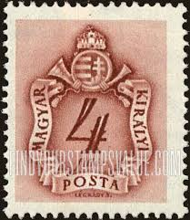 |
| Alamy | Hungary postage stamp hi-res stock photography and images - Page 2 - Alamy |  |